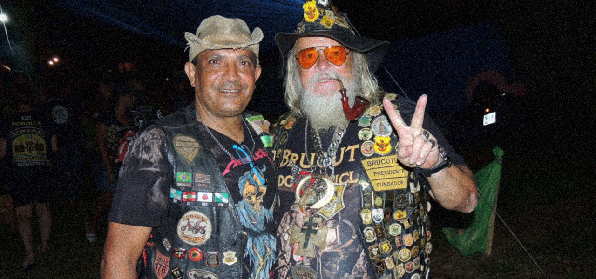

Os Encontros Triunfantes
As Grandes Travessias
Muitos já tentaram... mas não há como saber ou até mesmo descrever exatamente o que são as Grandes Travessias, porém estudos já comprovam que elas aparentam ter como foco percorrer a maior distancia possivel, sempre rumo ao Sol, e tentando quebrar recordes e as já bem estabelecidas leis da física, concentrando o maior numero de massa no menor espaço possivel!
Fonte: Facebook Original do Zeca - A Trigonometria [imagem editada]
A UNIÃO DOS POVOS - 2023
A Colossal União dos Povos de Jacareí, organizada por Zeca e sua turma, foi a Grande Travessia mais pesada que se tem noticia, esse foi o evento em que disseram que o Trivale enlouqueceu de vez, pois houveram registros de Terremotos 5,8 na Escala Richter e os que passaram próximo dos "Parceiros" nesse dia dizem estar sentindo os tremores até hoje, e o pobre do asfalto que teve que suportar tamanha pressão chegou a ficar com Trincheiras marcando o trajeto dessa violenta Cavalgada.
Confira abaixo um video dessa Grande Atravessada, junto do magnifico Roger Carlos, o Construtor de Triciclos:
E o que eles fazem durante toda essa alegoria infelizmente segue um mistério, mas temos alguns relatos fotograficos dessa absurda jornada Transversal:

Fonte: Facebook Original do Zeca - Multirão [imagem editada]

Fonte: Facebook Original do Zeca - Trialegria [imagem editada]
Os encontros de irmãos
A Grande Travessia é quase uma comemoração religiosa, e por isso não acontece o tempo todo, mas os irmãos (e irmãs) sentem falta de um companheirismo, e decidem realizar pequenos encontros mais informais, nos quais desfrutam de um explendoroso aperto de mãos, comemoram o fim da saudade, ou até um aniversario de um irmão que seja muito parceiro.
Fonte: Facebook Original do Zeca [imagem editada]
Fonte: Facebook Original do Zeca [imagem editada]
Fonte: Facebook Original do Zeca [imagem editada]
Caso queira entrar de cabeça nessa onda e sentir um pouco da Magia que os Tripulantes sentem em todas essas aventuras, assista o vídeo abaixo onde é entrevistado o poderosissimo fundador Edson(Foca), que é praticamente um pioneiro de Triciclo no planeta e também no Universo, sendo um dos principais responsaveis pela Tricultura na sociedade atual, fora á nobre apresentação da Tribo em ações sociais e também ao famoso conceito CIPA, que será apresentado mais detalhadamente a frente no capitulo 3.
Continue lendo >
Capitulo 3
O perturbador numero 3
Pagina 5 de 6